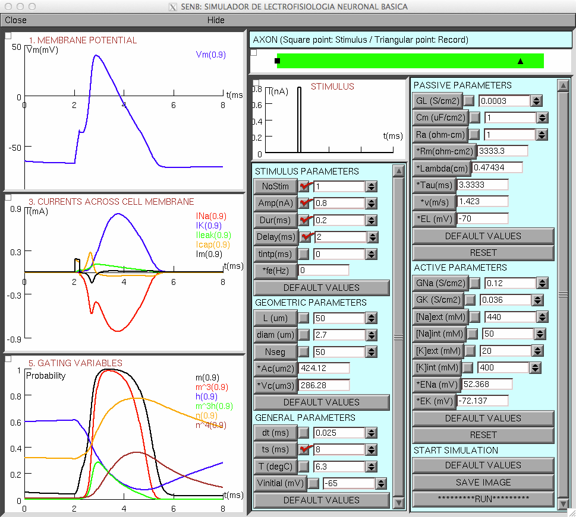

The model code for the SENB learning tool from the paper: Hernandez OE, Zurek EE (2013) Teaching and learning the Hodgkin-Huxley model based on software developed in NEURON's programming language hoc. BMC Med Educ 13:70 is available from this page: http://ylang-ylang.uninorte.edu.co:8080/drupal/?q=node/565 which contains this link to the hoc code: http://ylang-ylang.uninorte.edu.co:8080/drupal/files/SENB.hoc This NEURON hoc code can be run without compiling any mod files. After NEURON is installed, on mswin you can double click on the SENB.hoc code in windows explorer, on mac you can drag and drop SENB.hoc onto the nrngui icon, and on unix/linux you can type the command "nrngui SENB.hoc" once you are in the folder containing that file. If you adjust the parameters to figure 1 in the paper and run you should see a figure like: 